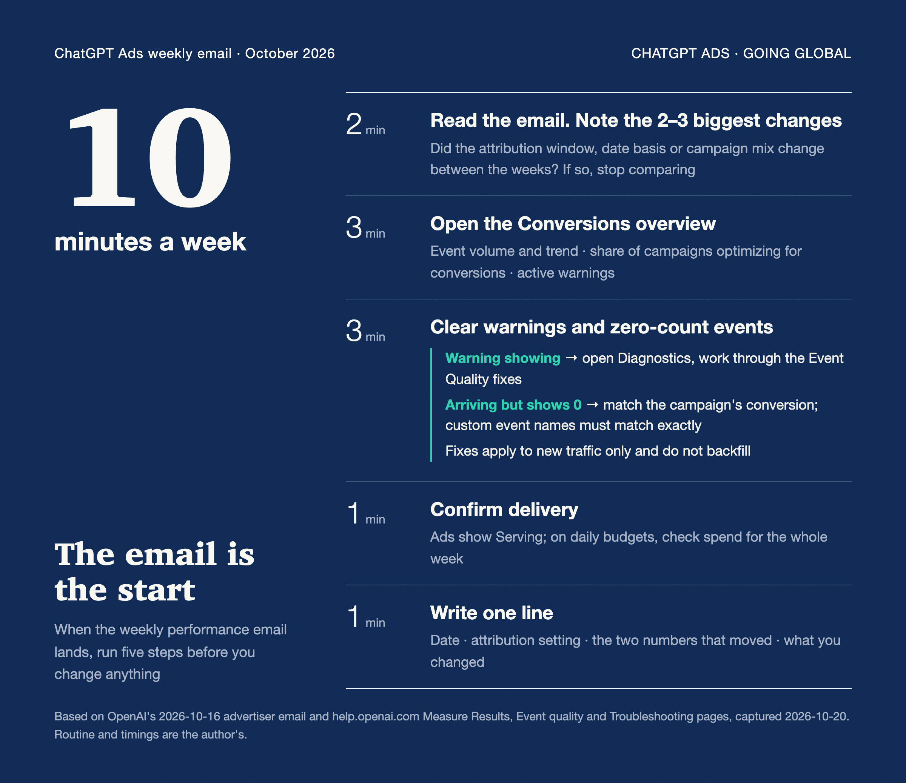

TL;DR
The weekly email from ChatGPT Ads is a prompt to look, not a result to forward. Read it, then spend ten minutes in Ads Manager before you decide anything.
Last week I covered attribution windows and the Event Quality Score. This week OpenAI added the place where you will see both every week. On October 16 it emailed advertisers about a redesigned Conversions page, weekly performance emails and a feedback button inside Ads Manager. This piece uses that email and OpenAI's Help Center, captured October 20. It does not use numbers from our own account.
If you already spend on ChatGPT Ads, this gives you a routine for the day the email arrives. If you are getting ready, it tells you what the first weeks should look like.
Five items are in the email. Three of them change what you do each week.
The other two are new measurement partners (Northbeam, DV Rockerbox and INCRMNTAL, plus mobile partners Kochava, Tenjin and Airbridge) and tests of larger visual ad formats. OpenAI says the visual tests "use existing campaigns and creative, with no action required from advertisers."
A week-over-week change is a fact about two numbers. Three things can move those numbers without anything changing in the market.
So when the email shows a big swing, the first question is whether the two weeks were measured the same way.
OpenAI does not publish a weekly routine. This is mine, built from the email and the Help Center pages. The minutes are a guide.

1. Read the email (2 minutes). Note the two or three biggest week-over-week changes. Ask whether the attribution window, the date basis or the campaign mix changed between the weeks. If they did, stop comparing and note it.
2. Open the Conversions overview (3 minutes). Go to Ads Manager, then Conversions. Look at three things the email says the overview shows.
3. Clear warnings and zeros (3 minutes, or hand off). Two cases are common.
4. Confirm delivery (1 minute). Check that ads show Serving. If you use daily budgets, look at spend for the current weekly period too. OpenAI's troubleshooting page warns that "using the weekly allowance early can stop delivery later in the week."
5. Write one line (1 minute). Date, attribution setting, the two numbers that moved, and what you changed. Next week's email will only make sense against this line.
Ads Manager now has two routes, and they do different jobs.
OpenAI lists what to send support about reporting: ad account ID, campaign and ad names, date range and time zone, an Ads Manager CSV export, and your analytics comparison. For conversion questions, add the event names and example timestamps. Do not send API keys.
If the issue looks larger than one campaign, OpenAI asks you to say so and give a few concrete examples.
OpenAI's plugin for ChatGPT and Codex can run a weekly review for you. Its Help Center page says you can "schedule daily or weekly reviews," and that reviews give evidence and next steps but "never change your account."
Two limits are worth knowing. By default the plugin looks at the trailing seven completed days in the account's time zone. Its raw event check covers only the latest 50 events from the previous 15 minutes, so it is a live test, not a history. It also does not receive conversion value, so it will not report revenue or ROAS.
The plugin can save you step 1. It does not replace step 5. Someone still needs to write down what changed and why.
The weekly email is not a report to forward. It is a summary. Recent days are incomplete, and it does not show which settings produced the numbers.
A warning is not a broken campaign. It points to the data you send. Check that real actions are being captured before you change anything.
More campaigns on conversion optimization is not a goal in itself. The share in the overview should match your plan. A campaign without enough conversion signal can do better on another objective. That is my reading, not OpenAI's.
Already spending. Start this week:
Getting ready. The email only arrives once you have active campaigns. Before launch, set up the Pixel and the Conversions API with shared event IDs, and attach the right conversion to each campaign before traffic starts. Then the first email reflects real setup, not gaps.
Watching. Nothing to do yet. Know that ChatGPT Ads now reports to you every week. When you start, plan the routine at the same time as the campaign.
Open Ads Manager, go to Conversions, and look at the new overview. Note whether any warning is showing and what share of active campaigns optimize for conversions.
A question for the comments: which number would you want first in a weekly email, spend, conversions or cost per conversion? Tell me your category and I will compare what different categories watch in a later piece.
Yes. Since mid-October 2026, advertisers with active campaigns receive a weekly summary of account performance, with week-over-week changes and a link to full results in Ads Manager.
According to OpenAI, event volume and trends, the share of active campaigns optimizing for conversions, and active warnings linked to the Diagnostics tab. It stays visible across the Conversions tabs.
Check three things first: the last 24 to 48 hours are still processing, the attribution window may differ between weeks, and conversions are dated to the ad interaction by default. If all three match, the change is real activity.
Usually because the event you send does not match the conversion configured for the campaign. Custom event names must match exactly. Fixes apply to new traffic only and do not backfill.
Open the account menu in the bottom left corner of Ads Manager and choose Bug report or Product feedback. For account or reporting issues, contact ads-support@openai.com with your account ID, campaign names, date range, time zone and a CSV export.
Yes. You can schedule daily or weekly recommendation-only reviews. They do not change your account. By default they cover the trailing seven completed days.
Stan Lu · ChatGPT Ads · Going Global. I write explainers on official ChatGPT Ads updates, with sources split into OpenAI, coverage, and my own reading.
Series: ChatGPT Ads Update Explainer · Previous: Attribution windows and Event Quality Score · 中文版
Published 2026-10-29 · Last updated: 2026-10-29